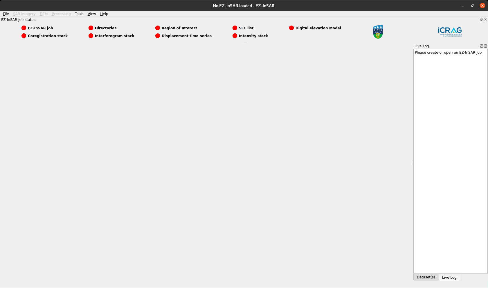
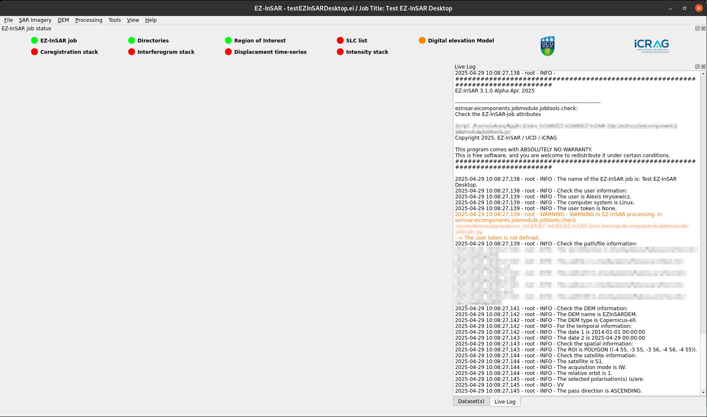

The main window of EZ-InSAR Desktop
The structure of EZ-InSAR Desktop
The main window of EZ-InSAR includes several parts:
the main space where the tools/applications will be displayed;
the menu bar for quick access;
several docks (log, datasets, status of the processing, etc.):
at the top: the status dock gives an overview of the processing (red for not started; orange for in progress; green for done);
at the right:
the live log dock return the log/verbose of EZ-InSAR;
the dataset dock displays the files available on the working directories. Files can be displayed by clicking on their names;
the system monitor dock (hidden by default) gives information on the computer.
{kind=link}

Main window of EZ-InSAR Graphical User Interface. The layout may differ slightly depending on your version.
The main window with a job loaded
Since a job is loaded, EZ-InSAR detects the current processing, unlock the applications (i.e., the menu bar) and update the live log.
{kind=link}

Main window of EZ-InSAR Graphical User Interface with a job loaded. The layout may differ slightly depending on your version.